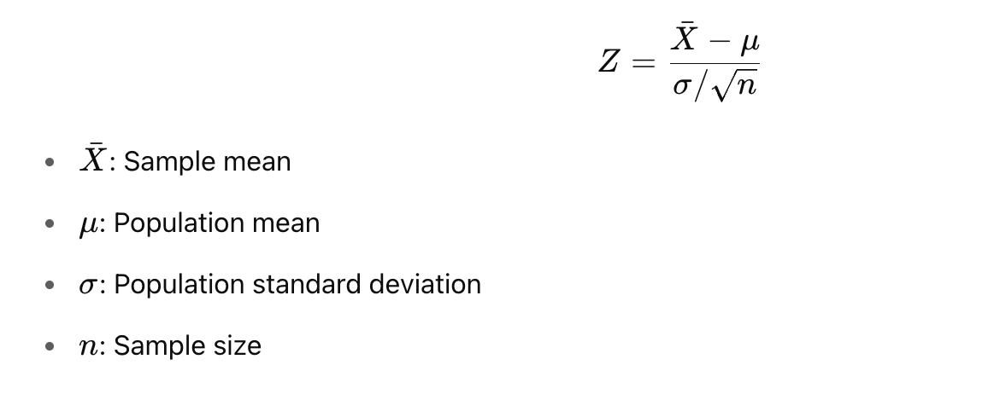

✅ Z-Test
📌 What is Z-Test?
A Z-test is a parametric statistical test used to determine whether there is a significant difference between sample and population means (or between two sample means) when the population variance is known and the sample size is large (typically n > 30).
When to Use a Z-Test?
| Condition | Description |
|---|---|
| ✅ Sample size is large (n > 30) | |
| ✅ Population standard deviation (σ) is known | |
| ✅ Data follows a normal distribution |
📦 Types of Z-Test
| Z-Test Type | Purpose |
|---|---|
| One-sample Z-test | Compare sample mean to population mean |
| Two-sample Z-test | Compare means from two independent samples |
| Z-test for proportions | Compare population proportions |
🧪 One-Sample Z-Test Formula

📊 Real-Life Example: Test if new teaching method improves scores
Suppose:
-
Population mean (μ) = 70
-
Population std. deviation (σ) = 10
-
Sample scores from new method: [72, 74, 69, 68, 71, 73, 75, 70]
✅ Python Example:
import numpy as np
from scipy.stats import norm
# Given
population_mean = 70
population_std = 10
sample = np.array([72, 74, 69, 68, 71, 73, 75, 70])
sample_mean = np.mean(sample)
n = len(sample)
# Z-statistic
z = (sample_mean - population_mean) / (population_std / np.sqrt(n))
# P-value (two-tailed)
p_value = 2 * (1 - norm.cdf(abs(z)))
print(f"Z-score: {z:.3f}")
print(f"P-value: {p_value:.3f}")
Z-score: 0.424 P-value: 0.671
- Since p > 0.05 → Fail to reject null hypothesis. Conclusion: The new teaching method does not significantly change scores.
📌 Summary:
| Aspect | Value |
|---|---|
| Test Type | Parametric |
| Use When | σ is known, n > 30 |
| Distribution | Normal |
| Test Statistic | Z-score |
| Common Use Cases | A/B Testing, Proportions |
two-sample z-test
z-test for proportions